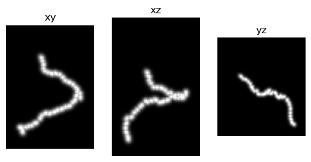
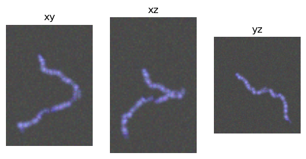
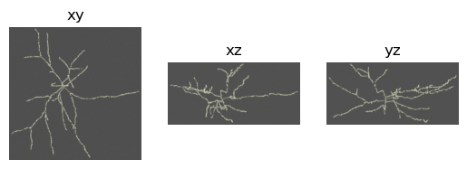

Make Simulated Neurons
[1]:
%load_ext autoreload
%autoreload 2
%matplotlib inline
[2]:
from glob import glob
import matplotlib.pyplot as plt
import numpy as np
import os
import pandas as pd
import plotly.express as px
import sys
sys.path.append('../')
from data_prep import generate, draw, load
Generate simulated SWC file data.
This is a list of nodes, each node being a list: [sample_idx, structure_id, x, y, z, radius, parent_id]
[3]:
swc_list = generate.make_swc_list((101,101,101),
length=20,
step_size=3,
kappa=20.0,
uniform_len=False,
random_start=True,
rng=None,
num_branches=1) # make simulated neuron paths.
Set random background and foreground (neuron) colors
[4]:
random_contrast=True
if random_contrast:
neuron_color = np.random.rand(3)
neuron_color /= np.linalg.norm(neuron_color)
background = np.random.rand(3)
background = background / np.linalg.norm(background) * 0.01
Draw neurons from SWC format data; one without and one with added noise and artifacts.
[5]:
neuron_no_artifacts = draw.neuron_from_swc(swc_list,
width=3,
noise=0.0,
adjust=False,
neuron_color=None,
background_color=None,
random_brightness=False,
dropout=False,
binary=False)
neuron_with_artifacts = draw.neuron_from_swc(swc_list,
width=3,
noise=0.05,
adjust=False,
neuron_color=neuron_color,
background_color=background,
random_brightness=True,
dropout=True,
binary=False)
Draw the images.
a. Without artifacts
[17]:
img = neuron_no_artifacts["image"].data.permute(1,2,3,0)
fig, ax = plt.subplots(1,3)
ax[0].imshow(img.amax(0))
ax[0].set_title('xy')
ax[1].imshow(img.amax(1))
ax[1].set_title('xz')
ax[2].imshow(img.amax(2))
ax[2].set_title('yz')
for x in ax:
x.set_axis_off()
plt.show()

b. With artifacts
[18]:
img = neuron_with_artifacts["image"].data.permute(1,2,3,0)
fig, ax = plt.subplots(1,3)
ax[0].imshow(img.amax(0))
ax[0].set_title('xy')
ax[1].imshow(img.amax(1))
ax[1].set_title('xz')
ax[2].imshow(img.amax(2))
ax[2].set_title('yz')
for x in ax:
x.set_axis_off()
plt.show()

Simulate from existing SWC file
Load real neuron morphology data from an SWC file
[8]:
labels_dir = "/home/brysongray/data/neuromorpho/"
files = [f for x in os.walk(labels_dir) for f in glob(os.path.join(x[0], '*.swc'))]
f_idx = 4
labels_file = files[f_idx]
# load and parse the SWC file data
swc_list = load.swc(labels_file)
sections, section_graph, branches, terminals, scale = load.parse_swc_list(swc_list, adjust=True)
loading file: /home/brysongray/data/neuromorpho/quinlan/CNG version/KQa4-12-2015-tracing.CNG.swc
Plot SWC raw data
[9]:
# Create a DataFrame for plotting
data = []
# Iterate through the sections dictionary
for section_id, section_data in sections.items():
# flatten the section into one list of consecutive points instead of segments (point pairs)
for segment in section_data:
point = segment[0]
data.append([section_id, point[0].item(), point[1].item(), point[2].item()])
df_sections = pd.DataFrame(data, columns=["section", "x", "y", "z"])
fig = px.line_3d(df_sections, x="x", y="y", z="z", color='section', )
fig.update_layout(scene_aspectmode='data')
fig.show()
Data type cannot be displayed: application/vnd.plotly.v1+json
Simulate a neuron microscopy image with artifacts from the SWC data
Set random colors for the background and foreground voxels.
[13]:
rng = np.random.default_rng()
neuron_color = np.array([1.0, 1.0, 1.0])
background = np.array([0., 0., 0.])
if random_contrast:
neuron_color = rng.uniform(size=3)
neuron_color /= np.linalg.norm(neuron_color)
background_color = rng.uniform(size=3)
background_color = background_color / np.linalg.norm(background_color) * 0.01
Draw the neuron image
[14]:
swc_data = draw.neuron_from_swc(swc_list,
width=3,
noise=0.05,
dropout=True,
adjust=True,
background_color=background,
neuron_color=neuron_color,
random_brightness=True,
binary=False,
rng=rng)
Plot
[19]:
img = swc_data["image"].data.permute(1,2,3,0)
fig, ax = plt.subplots(1,3)
ax[0].imshow(img.amax(0))
ax[0].set_title('xy')
ax[1].imshow(img.amax(1))
ax[1].set_title('xz')
ax[2].imshow(img.amax(2))
ax[2].set_title('yz')
for x in ax:
x.set_axis_off()
plt.show()
